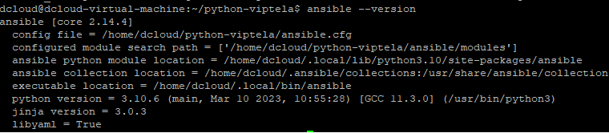
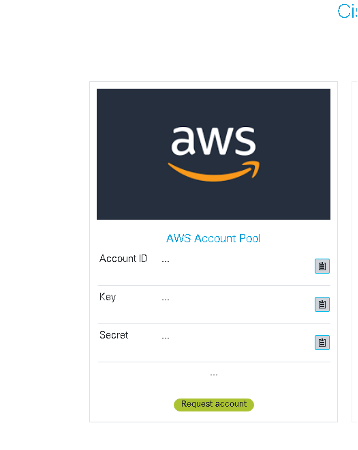
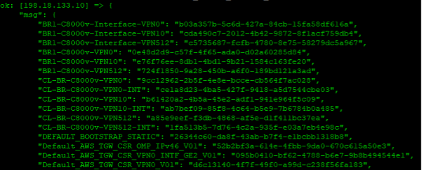

Extend the Enterprise WAN to the AWS Cloud: A first-hand deployment experience using Ansible
LTRXAR-2001
Speakers
Kyle Barnes – CX Architect, Praveen Poojary – CX Architect, Navin Suvarna – CX Architect
About this lab
Lab Introduction
We’d like to introduce you to a simple SD-WAN deployment: One single border router. In this lab the Viptela vManage, vSmart, vBond, and border router bring up sequence has already been completed.
We have two hosts, a windows jumpbox and a linux host, that we’ll leverage to provision our AWS account and execute our Ansible playbooks, respectively.
We’ve already deployed Ansible on the Linux host so we’re ready to dive into two very unique scenarios.
Lab Flow
In this lab, you will follow the lab guide on the scenarios below:
Scenario 1: We’ll explore the topics of Viptela device vs feature templates, Explore Ansible roles, Jinja2 templates, modules, etc. We’ll then leverage existing templates to reverse engineer the template structure to create our own!
Scenario 2: Here we’ll leverage a lab AWS environment to deploy Viptela’s Cloud OnRamp for Multicloud using Ansible playbooks. While most (all) of the playbooks used in this section are URI post/get calls, the outcome of this scenario is a deeper understanding of the APIs/Config Options available & used during the OnRamp process.
Lab Access
Below table provides the IP addresses and credentials for the devices used in this lab: Note: You are able to access all devices via SSH and GUI after AnyConnect into dCloud. There is no remote desktop or any jump server required to access the lab. If you don't have AnyConnect VPN Client installed, you can download AnyConnect from here https://developer.cisco.com/site/devnet/sandbox/anyconnect/
Lab Topology
(Remember when we said “VERY small SD-WAN deployment?)

Learning Objectives
Upon completion of this lab, you will be able to understand the following:
• Viptela SD-WAN device vs feature templates
• Understand basic Ansible structure (playbooks, roles, variables, modules)
• Available Cisco Viptela Modules
• Ansible installation process
• Viptela SD-WAN API documentation
• Viptela Cloud OnRamp process
• Viptela Cloud OnRamp APIs
Cisco SD-WAN includes a useful tool for configuration management and network monitoring: vManage. Within the SD-WAN fabric, the vManage tool is responsible for handling the management plane, meaning that all the configurations can be performed from its graphical user interface (GUI). The vManage tool also offers a rich set of REST APIs, enabling you to automate specific workflows using your favorite tool, such as Postman, Python, Ansible, and others.
Task 1: Environment Setup
- Create a notepad that will have the following information that you’ll be working to fill out throughout this lab.
vManage IP: vManage Username: vManage Password: AWS Access Key: AWS Secret Key: 8000v UUID1: (To be used for Scenario 2) 8000v UUID2: (To be used for Scenario 2) 8000v UUID3: (To be used for Scenario 1) VPC 1 ID: VPC 2 ID: - Connect to the Ubuntu host via the VM console (or PuTTY).
-
Review the Cisco Viptela vManage Python SDK/CLI/Ansible repo in the /home/dcloud directory. Note: This has already been installed, but the process of installation was simple
cd home/dcloud pip install viptela -
Navigate to the python-viptela directory
- Verify Ansible is installed with ansible –version 
- Modify the hosts file. The default location for this file is /etc/ansible/hosts.
[vmanage]
Note: This is as bare-bones as one could possibly create a host file. For the purpose of education, the host file format is most commonly in either INI or YAML. This host file allows Ansible playbooks to be executed hierarchically, with nested parent/child groups, and with specific variables associated to a host or group(s) of hosts.
[webservers]
foo.example.com
bar.example.com
[dbservers]
one.example.com
two.example.com
three.example.com
-
Open your windows jumphost via remote desktop

-
Provision AWS credentials

(Double-click the Launch shortcut)
- Request AWS account (this takes a couple of minutes, so let’s get this knocked out) 
Introduction to key concepts
In the SD-WAN environment, you must still manage configuration of devices (vEdges) independently. This is because the SD-WAN fabric is widely distributed in the wide-area network (WAN).
The vManage is a single point of configuration for the whole WAN fabric and uses a templates to simplify configuration management. In SD-WAN, you can configure every feature with a feature template. Templates ensure that the configuration is consistent across all the devices. Feature templates are grouped together into device templates that will be attached to the end devices.
What is a feature template?
Feature templates are the building blocks of complete configuration for a device. For each feature that you can enable on a device, Cisco vManage provides a template form that you fill out. The form allows you to set the values for all configurable parameters for that feature.
Because device configurations vary for different device types and the different types of routers, feature templates are specific to the type of device.
How does this differ from device templates?
Device templates use feature templates! Device templates contain complete operational configuration for a device. You create device templates by consolidating individual feature templates. Each device template is specific for a type of device. For each device type, if multiple devices have the same configuration, you can use the same device template for them. For example, many of the routers in a network might have the same basic configuration, so you can configure them with the same templates. (You specify the differences in the templates using configuration variables, which are discussed below.) If the configurations for the same type of devices are different, you create separate device templates.
For the first scenario, we’ll be creating & using several Ansible playbooks. The purpose of this scenario is to familiarize yourself with the YAML playbook syntax and to better understand feature and device templates within an SD-WAN fabric.
One thing you’ll find throughout these subsequent tasks are a few Ansible playbooks that leverage vManage modules within Ansible found here https://github.com/CiscoDevNet/python-viptela
What are modules?
“Ansible modules are units of code that can control system resources or execute system commands. Ansible provides a module library that you can execute directly on remote hosts or through playbooks.” In other words, modules are Python scripts that expect several inputs and can provide varying outputs.
Template Export (demonstration)
The first playbook we’ll create uses the ansible URI module to invoke an API call to vManage. The main API used here is the /dataservice/template/feature API.
The /dataservice/ part of the URL represents the API entry point. The remainder, /template/feature/, identifies the resource that you are going to manipulate: in this case, feature templates.
The methods that you are going to use to manipulate feature template are:
GET: Retrieves information from the system.
POST: Creates a new object (in this case, a new feature template).
PUT: Modifies an existing object.
DELETE: Deletes an existing object
The default output is a JSON formatted list of the various device templates, and the template ID associated with each individual feature template.
Note: The template ID will be used to uniquely identify the feature templates when we associate the feature templates with the device template at a later step

The playbook then cycles through the json data and combines the feature template name & feature template ID into a key/value pair. These values are stored into a local variable called feature_template_db which is then printed.
- name: Export vManage Template
hosts: vmanage
gather_facts: no
connection: local
vars:
file: vmanage-templates.yml
#ALL YOUR POD/AWS SPECIFICS GO HERE#
vars_files:
- /home/dcloud/python-viptela/external_vars.yml
tasks:
- name: Get Cookies
ansible.builtin.uri:
url: https://{{ VMANAGE_IP }}/j_security_check
method: POST
body_format: form-urlencoded
validate_certs: False
body:
j_username: "{{ USERNAME }}"
j_password: "{{ PASSWORD }}"
register: login
- name: Output Cookie Info
ansible.builtin.debug:
var: login.cookies
- name: Get XSRF
ansible.builtin.uri:
url: https://{{ VMANAGE_IP }}/dataservice/client/token
method: GET
body_format: json
validate_certs: False
return_content: true
headers:
Cookie: "{{ login.cookies_string }}"
register: cookie_output
- name: Cookie Output
ansible.builtin.debug:
var: cookie_output.content
##################################################################################
- name: Get Feature Template
uri:
url: https://{{ VMANAGE_IP }}/dataservice/template/feature
method: GET
return_content: yes
validate_certs: no
headers:
Cookie: "{{ login.cookies_string }}"
X-XSRF-TOKEN: "{{ cookie_output.content }}"
Content-Type: "application/json"
register: template_list
- set_fact:
feature_template_db: "{{ feature_template_db|default({}) | combine( {item.templateName: item.templateId } ) }}"
no_log: True
with_items: "{{ template_list.json.data }}"
- debug:
msg: "{{ feature_template_db }}"
Copy/paste this into a new yml file called “10_Export_Feature_Templates.yml” – this playbook will only be run for demonstration purposes and is not used in the subsequent sections.

But wait? What is the mess above the “****” line in playbook 10? You’ll see this in differing flavours throughout this lab guide but the principal behind this is that before we can do anything using APIs we need to 1) authenticate (get a cookie) and 2) generate an XSRF token, using the cookie. Between scenario 1 and 2 you’ll see this done in varying ways-using a role and/or part of the Ansible playbook. The former option allows for cleaner, more concise Ansible playbook construction. Regardless, URI calls to the vManage APIs are how we perform most (all) of the steps throughout this lab guide.
This isn’t always how Ansible is used, though. Executing these plays locally on the Ansible control node is being performed with the “Connection: local” syntax as the top of the Playbook. Ansible typically works by connecting to your nodes and pushing out small programs—called modules—to these nodes. Modules are used to accomplish automation tasks in Ansible. These programs are written to be resource models of the desired state of the system. Ansible then executes these modules and removes them when finished. For automating network devices and other IT appliances where modules cannot be executed, Ansible will run on the control node (i.e. what we’re doing for all of our Ansible plays).
Template Export (template dump)
Copy and paste the following into a new yml file called “11_Export_Existing_Templates.yml”
The purpose of this playbook is to use the the vmanage_template_export API (which should be visible within the python-viptela>ansible>modules directory within the github link). The contents of this export are stored in the yml file ‘vmanage-templates.yml.’ We’ll leverage this ‘dump’ of feature templates in subsequent steps throughout Scenario 1. But how?
Before we get to that, execute the playbook and review the output of the vmanage-templates.yml file (created in the same directory as where the playbook is executed).
- name: Export vManage Template
hosts: vmanage
gather_facts: no
connection: local
vars:
file: vmanage-templates.yml
#ALL YOUR POD/AWS SPECIFICS GO HERE#
vars_files:
- /home/dcloud/python-viptela/external_vars.yml
tasks:
- name: Get Cookies
ansible.builtin.uri:
url: https://{{ VMANAGE_IP }}/j_security_check
method: POST
body_format: form-urlencoded
validate_certs: False
body:
j_username: "{{ USERNAME }}"
j_password: "{{ PASSWORD }}"
register: login
- name: Output Cookie Info
ansible.builtin.debug:
var: login.cookies
- name: Get XSRF
ansible.builtin.uri:
url: https://{{ VMANAGE_IP }}/dataservice/client/token
method: GET
body_format: json
validate_certs: False
return_content: true
headers:
Cookie: "{{ login.cookies_string }}"
register: cookie_output
- name: Cookie Output
ansible.builtin.debug:
var: cookie_output.content
##################################################################################
tasks:
- vmanage_template_export:
user: "{{ USERNAME }}"
host: "{{ VMANAGE_IP }}"
password: "{{ PASSWORD }}"
file: "{{ file }}"

Now that we have this information available to us, we can effectively reverse engineer the existing templates to create a new device template of our own.
How?
Before we answer how let’s cover two topics: Roles: A role in Ansible is a set of tasks that accomplish a specific goal within a playbook. Roles let you automatically load related vars, files, tasks, handlers, and other Ansible artifacts based on a known file structure. After you group your content in roles, you can easily reuse them and share them with other users. Jinja2: Jinja2 templates are simple template files that store variables that can change from time to time. When Playbooks are executed, these variables get replaced by actual values defined in Ansible Playbooks.
Here is a high-level flow as to how we’ll leverage Jinja2 templates & roles to develop our own device templates using Ansible.
1. Create roles via Ansible Galaxy: “ansible-galaxy init ~/python-viptela/roles/
4. Modify j2 components that we intend to templatize.
Note: We selected some things to demonstrate the key/value pair, but one could modify this with whatever factors you care to templatize.
- Create subsequent playbooks that call the role where the J2 file resides and pass the specific variables.
- The role will use the tasks main.yml file in a top-down format (render first, post second)
a. Render: Create the JSON payload from the variables that are passed when the role is used

b. Post: This may be a surprise, but post…performs a URI post using the rendered JSON file.

To summarize the high-level components within the roles directories:

Templates: This is where the actual j2 file lives.
Tasks: Where we render the JSON payload and post when the role is referenced.
Files: Latest JSON payload, with passed variables populated.
Note: An Ansible role has a defined directory structure with eight main standard directories. You must include at least one of these directories in each role. You can omit any directories the role does not use.
Scenario 1
As described in the previous section, Configuration management in SD-WAN is performed with Feature and device templates. Think of a feature template as a small piece of a puzzle that describes the configuration of a given feature, such as a Banner, VPN, or BGP. The feature template renders the configuration into the CLI. After you create the feature templates, you can merge them together into a device template. A device template represents a target design of a given branch. For example, you need a device template for single-homed branches, one for dual-homed ones, another for branches that leverage routing protocols, and more. In Section1, you will automatically provision a vEdge. To do that, you need to create a set of feature templates, merge those feature templates into a device template and subsequently attach the device-template to the vEdge. To begin, you are going to create these feature templates: • VPN0 Template • VPN512 Template • VPN10 Template (Service VPN) • VPN0 Interface Template • VPN512 Interface Template • VPN10 Interface Template (Service VPN)
Task 1: Deploy Feature VPN0 Template
Using the logic explained in the key concepts introduction, we’re going to develop our own template based on a number of user-defined variables. In this first feature template example, we ‘care’ about the following:
1. Template Name
2. Template Description
3. DNS Address
4. Default next hop
5. Default next hop Distance
Given we know WHAT we want to modify, we now need to create a J2 template (using the vmanage-templates.yml ‘dump’ created previously). A J2 template is formatted in JSON so we’ll take the template we which to templatize (VPN0) and convert it into JSON.
https://onlineyamltools.com/convert-yaml-to-json
- Convert the VPN0 YML content from the vmanage-templates.yml file into JSON, and modify the 5 items listed above. You’re going to be looking for the ‘BR1-C8000v-VPN0’ template name.
The syntax for the variables is: "{{ VARIABLE }}" Find the 5 items we wish to templatize and give them a name. For this first example, we’ve used the following: "{{ Template_Name }}" "{{ Template_Description }}" "{{ DNS_Address }}" "{{ Default_Next_Hop_VPN0 }}" "{{ Default_Next_Hop_VPN0_Distance }}"
Now that we have the YML file converted into a JSON and the values replaced with variable names, we need to create our role directory and add this content into the templates subdirectory.
2. Run the following:
ansible-galaxy init ~/python-viptela/roles/<ROLE NAME>
-
Navigate to the new role you’ve defined and go to the templates subdirectory (it is empty). Create a j2 file (nano
.j2) and copy/paste the file you’ve been modifying. Save/exit (Ctrl+X) -
Now that we have the template we need to tell the role WHAT to do, should the role be called. Navigate to ‘tasks.’ We can see that a value already exists here, called main.yml. Should we have a need for multiple tasks, main.yml is executed sequentially. If you perform at ‘more main.yml’ you’ll see that this file is currently empty. We’ll create two tasks, then reference them within main.yml by importing them.
render_vpn0_template.yml post_vpn0_template.yml - Create the following files within the tasks directory.
Let’s cover & modify the render_vpn0_template.yml task first.
This task does nothing more than create a JSON file from the j2 template that we created previously. What’s different is that this JSON file will include the values created from any variables passed when this role is called.
- name: Clean Previously Rendered Templates
file:
path: "{{item}}"
state: absent
force: true
with_fileglob:
- "{{role_path}}/files/*"
- name: Render VPN0 Template
template: src="<Template Name>”.j2" dest={{role_path}}/files/{{ Template_Name }}.json
This file specifically references the j2 template that you’ve created-so make sure you specify the correct name. It then creates the JSON file in the directory ‘files’ within this specific role. Lastly, because this playbook may be run more than once, it replaces any existing files with the newly created one on each playbook execution.
6. Lets navigate back to the main.yml and import this task:
- import_tasks: render_vpn0_template.yml
Now that we have the task to CREATE the JSON file…we need a task to do a URI POST, using the JSON file created previously within the body of our message.
7. Create another yml file within the tasks directory, calling this one post_vpn0_template.yml:
- name: Post VPN0 Template
uri:
url: https://{{ VMANAGE_IP }}/dataservice/template/feature
method: POST
return_content: yes
validate_certs: no
body: "{{lookup('file', '{{item}}')}}"
body_format: json
headers:
Cookie: "{{ login.cookies_string }}"
X-XSRF-TOKEN: "{{ cookie_output.content }}"
Content-Type: "application/json"
with_fileglob:
- "{{ role_path }}/files/*.json"
Like before, we now need to modify our main.yml file to call the post task.
8. Add the following to the main.yml file, after the render import:
- import_tasks: post_vpn0_template.yml
If we’ve followed the above steps correctly, our main.yml should look something like this:
dcloud@dcloud-virtual-machine:~/python-viptela/roles/create_vpn0_template/tasks$ more main.yml
- import_tasks: render_vpn0_template.yml
- import_tasks: post_vpn0_template.yml
To recap, the above steps:
1. Created the role
2. Created the j2 template, from the vmanage-templates.yml ‘dump’
3. Created the tasks render & post
We are now ready to create a playbook that will leverage the role!
9. Create a new YML file called “12_Deploy_Feature_VPN0_Template.yml”
- name: Deploy Feature VPN0 Template
hosts: all
connection: local
gather_facts: no
vars_files:
- /home/dcloud/python-viptela/external_vars.yml
roles:
- role: login
tags: CL-2001,CL-2001:login
- role: create_vpn0_template
tags: CL-2001,CL-2001:create
vars:
- Template_Name: 'CL-BR-C8000v-VPN0'
- Template_Description: 'VPN0 Template for the On-Prem C8000v'
- DNS_Address: '198.18.1.1'
- Default_Next_Hop_VPN0: '198.19.2.1'
- Default_Next_Hop_VPN0_Distance: '1'
Hopefully the explanation in the previous steps make this playbook’s purpose obvious, but from a high-level we’re calling the role ‘login’ to generate a cookie & XSRF token then the role ‘create_vpn0_template’ and passing a number of variables to the j2 template within that role.
10. Execute this playbook.
(If it wasn’t the obvious, you now have a new feature template).
Task 2: Deploy Feature VPN512 Template
- Do everything you did before, again. Just kidding, we’ve done the leg work to pre-populate these roles (as you’ve probably seen in the roles directory).
- Simply create a new yml file called ‘13_Deploy_Feature_VPN512_Template.yml.’ We’ll use this playbook to-you guessed it-create a VPN512 template.
- name: Deploy Feature VPN512 Template
hosts: all
connection: local
gather_facts: no
vars_files:
- /home/dcloud/python-viptela/external_vars.yml
roles:
- role: login
tags: CL-2001,CL-2001:login
- role: create_vpn512_template
tags: CL-2001,CL-2001:create
vars:
- Template_Name: 'CL-BR-C8000v-VPN512'
- Template_Description: 'VPN512 Template for the On-Prem C8000v'
- Default_Next_Hop_VPN512: '198.18.128.1'
- Default_Next_Hop_VPN512_Distance: '1'
- Execute this playbook.
Task 3: Deploy Service VPN10 Template
- Create a new yml file called ‘14_Deploy_Feature_Service_VPN10_Template.yml.’
- name: Deploy Service VPN10 Template
hosts: all
connection: local
gather_facts: no
vars_files:
- /home/dcloud/python-viptela/external_vars.yml
roles:
- role: login
tags: CL-2001,CL-2001:login
- role: create_service_vpn10_template
tags: CL-2001,CL-2001:create
vars:
- Template_Name: 'CL-BR-C8000v-VPN10'
- Template_Description: 'VPN10 Template for the On-Prem C8000v'
- DNS_Address: '198.18.1.1'
- Execute this playbook
Task 4: Deploy VPN0 Interface Feature Template
- Create a new yml file called ‘15_Deploy_Feature_VPN0_Interface_Template.yml’
- name: Deploy Feature VPN0 Interface Template
hosts: all
connection: local
gather_facts: no
vars_files:
- /home/dcloud/python-viptela/external_vars.yml
roles:
- role: login
tags: CL-2001,CL-2001:login
- role: create_vpn0_interface_template
tags: CL-2001,CL-2001:create
vars:
- Template_Name: 'CL-BR-C8000v-VPN0-INT'
- Template_Description: 'VPN0 Interface Template for the On-Prem C8000v'
- VPN_Interface: 'GigabitEthernet3'
- VPN_Interface_Address: '198.19.2.13/24'
- VPN_Interface_IP_MTU: '1500'
- VPN_Interface_MTU: '1500'
- VPN_Interface_ARP_Timeout: '1200'
- VPN_Interface_Load_Interval: '30'
- Tunnel_Interface_Color: 'biz-internet'
- Tunnel_Interface_Encap: 'ipsec'
- Tunnel_DHCP: 'true'
- Tunnel_DNS: 'true'
- Tunnel_ICMP: 'true'
- NAT_UDP_Timeout: '1'
- NAT_TCP_Timeout: '60'
- NAT_Type: 'interface'
- NAT_Overload: 'true'
Note: While this looks like a lot bigger, it simply references a role (create_vpn0_interface_template) that has more variables specified in its j2 template.
2. Execute this playbook.
Task 5: Deploy VPN512 Interface Feature Template
- Create a new yml file called ‘16_Deploy_Feature_VPN512_Interface_Template.yml’
- name: Deploy Feature VPN512 Interface Template
hosts: all
connection: local
gather_facts: no
vars_files:
- /home/dcloud/python-viptela/external_vars.yml
roles:
- role: login
tags: CL-2001,CL-2001:login
- role: create_vpn512_interface_template
tags: CL-2001,CL-2001:create
vars:
- Template_Name: ‘CL-BR-C8000v-VPN512-INT’
- Template_Description: ‘VPN512 Interface Template for the On-Prem C8000v’
- VPN_Interface: ‘GigabitEthernet1’
- VPN_Interface_Address: ‘198.18.133.13/18’
- VPN_Interface_IP_MTU: ‘1500’
- VPN_Interface_MTU: ‘1500’
- VPN_Interface_ARP_Timeout: ‘1200’
- VPN_Interface_Load_Interval: ‘30’
- Execute this playbook.
Task 6: Deploy VPN10 Interface Template (Service VPN)
- Create a new yml file called ‘16_Deploy_Feature_VPN512_Interface_Template.yml’
- name: Deploy Feature Service VPN10 Interface Template
hosts: all
connection: local
gather_facts: no
vars_files:
- /home/dcloud/python-viptela/external_vars.yml
roles:
- role: login
tags: CL-2001,CL-2001:login
- role: create_service_vpn10_interface_template
tags: CL-2001,CL-2001:create
vars:
- Template_Name: 'CL-BR-C8000v-VPN10-INT'
- Template_Description: 'VPN10 Interface Template for the On-Prem C8000v'
- VPN_Interface: 'GigabitEthernet2'
- VPN_Interface_Address: '100.64.10.1/24'
- VPN_Interface_IP_MTU: '1500'
- VPN_Interface_MTU: '1500'
- VPN_Interface_ARP_Timeout: '1200'
- VPN_Interface_Load_Interval: '30'
- Execute this playbook.
Task 7: Deploy Device Template
- Create a new yml file called ‘18_Deploy_Device_Template.yml’
- name: Deploy Device Template
hosts: all
connection: local
gather_facts: no
vars_files:
- /home/dcloud/python-viptela/external_vars.yml
roles:
- role: login
tags: CL-2001,CL-2001:login
- role: create_device_template
tags: CL-2001,CL-2001:create
vars:
- Device_Template_Name: 'CL-BR1-C8000v'
- Device_Template_Description: 'Device Template for OnPrem C8000v'
- Feature_AAA: Factory_Default_AAA_CISCO_Template
- Feature_BFD: Default_BFD_Cisco_V01
- Feature_Banner: Factory_Default_Retail_Banner
- Feature_Logging: Default_Logging_Cisco_V01
- Feature_OMP: Factory_Default_Cisco_OMP_ipv46_Template
- Feature_Global: Factory_Default_Global_CISCO_Template
- Feature_Security: Default_Security_Cisco_V01
- Feature_System: Default_BootStrap_Cisco_System_Template
- Feature_VPN:
CL-BR-C8000v-VPN0:
- CL-BR-C8000v-VPN0-INT
CL-BR-C8000v-VPN512:
- CL-BR-C8000v-VPN512-INT
CL-BR-C8000v-VPN10:
- CL-BR-C8000v-VPN10-INT
Note: The feature VPNs above are what we created in tasks 1-6. The outcome of this playbook execution will be a device template with the corresponding feature templates.
2. Execute this playbook.
Task 8: Attach Device Template
- Create a new yml file called ‘19_Attach_Device_Template.yml’
- name: Attach Device Template
hosts: all
connection: local
gather_facts: no
vars_files:
- /home/dcloud/python-viptela/external_vars.yml
roles:
- role: login
tags: CL-2001,CL-2001:login
- role: attach_device_template
tags: lab2:attach
vars:
DeviceTemplateList:
CL-BR1-C8000v:
- csv-deviceIP: 1.1.1.101
csv-deviceId: C8K-16AAD483-F5EC-AB00-465A-EDBA673652B7
csv-host-name: CL-BR1-CEDGE8Kv-TEST
//system/host-name: CL-BR1-CEDGE8Kv-TEST
//system/site-id: 10
//system/system-ip: 1.1.1.101
Change: false
Note: We may need to modify the csv-deviceId value with an 8000v from your pod. An available UUID can be found in Configuration>Devices.
- Execute this playbook.
What did we just do? Lets recap steps 1-8:
- We created 2 VPN feature templates (0 & 512)
- We created a service VPN template (VPN10)
- We created 3 interface feature templates
- We associated these feature templates into a device template
- We attached this device template to a C8000v with the UUID of an C8000v within our lab environment.
Note: This is for demonstration purposes and this specific C8000v is not currently online. We’ve assigned this device template to this UUID should it come online it will have the configuration associated with these feature templates.